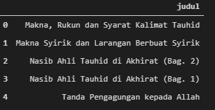
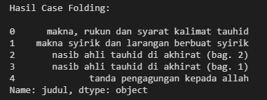
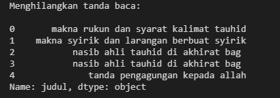
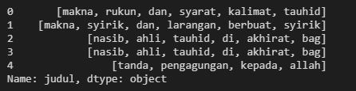
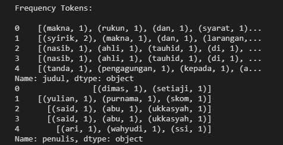
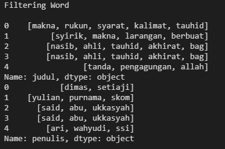
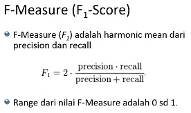

Web Mining A 2021
Teknik Informatika Universitas Trunojoyo Madura
Nama: Ahmad Wahyudi
NIM: 160411100093
Dosen Pengampu: Mula'ab, S.Si., M.Kom.
Pengantar
Di zaman sekarang teknologi Internet telah berkembang dengan sangat pesat. Singkatnya kebutuhan akan informasi dan data sekarang tidak lepas dari mengakses Internet dan membuka website untuk menunjang pekerjaan sehari-hari seperti membaca berita, menulis, menonton hiburan, dan sebagainya. Namun karena Informasi dan data yang tersebar sangatlah banyak serta keterbatasan manusia dalam mengumpulkan informasi dan data yang dibutuhkan, maka manusia mulai memanfaatkan teknologi untuk memudahkan kita dalam melakukan pengumpulan informasi dan data. salah satunya adalah dengan melakukan Web Crawling.
Web Crawling
Pengertian
Web Crawling atau biasa disebut dengan spiders adalah proses di mana mesin pencari mengirimkan tim robot (crawler atau spider) untuk menemukan konten baru dan konten yang telah di-update. Konten yang dimaksud bisa beragam, mulai dari sebuah dokumen, gambar, video, audio, dan lain sebagainya.
Untuk melakukan web crawling, kita setidaknya harus memiliki pengetahuan dasar tentang HTML karena semua website yang akan kita crawling menggunakan teknologi tersebut.
Pada kesempatan kali ini, kita akan menggunakan bahasa pemrograman Python serta library Scrapy untuk melakukan proses crawling data. Website yang akan kita gunakan dalam ujicoba kali ini adalah Muslim.or.id.
Uji Coba Web Crawling
Seperti yang telah disebutkan diatas bahwa website yang akan kita jadikan objek ujicoba adalah Muslim.or.id yang merupakan salah satu media Islam yang banyak membahas mengenai seputar hukum-hukum islam yang banyak mengandung manfaat bagi kaum muslimin. Artikel didalam website tersebut terdiri dari berbagai macam disiplin ilmu.
Pertama, kita tentukan terlebih dahulu halaman yang akan kita ekstrak datanya.
https://muslim.or.id/category/aqidah
Buka command prompt kemudian ketik:
C:\Users\AHMAD WAHYUDI\Desktop>scrapy startproject muslim_project
Kemudian masuk kedalam direktori project:
C:\Users\AHMAD WAHYUDI\Desktop>cd muslim_project
Masukkan link https://muslim.or.id/category/aqidah
C:\Users\AHMAD WAHYUDI\Desktop\muslim_project>scrapy genspider muslim https://muslim.or.id/category/aqidah
Buka folder muslim_project. Didalamnya akan terdapat folder spiders yang di generate dari hasil menjalankan perintah diatas. Didalam folder spiders akan ada file yang bernama almanhaj. Buka file tersebut dengan text-editor. Dalam hal ini saya menggunakan Vs-Code.
import scrapy
class MuslimSpider(scrapy.Spider):
name = 'muslim'
allowed_domains = ['https://muslim.or.id/category/aqidah']
start_urls = ['http://https://muslim.or.id/category/aqidah/']
def parse(self, response):
pass
Edit source code pada bagian
def parse(self, response):
pass
sehingga menjadi seperti
def parse(self, response):
data = response.css('.post-box')
for item in data:
title = item.css('.post-title a::text ').extract()
author = item.css('.post-meta-author a::text').extract()
yield{
'Judul Artikel': title ,
'Penulis': author
}
Penjelasan Code
data = response.css('.post-box') - nama class dimana data yang akan diestrak berada.
Karena kita akan mengambil nama judul dan nama penulis, kita perlu mengetahui nama class yang menampung judul dan penulis, maka
for item in data:
title = item.css('.post-title a::text ').extract()
author = item.css('.post-meta-author a::text').extract()
yield{
'Judul Artikel': title ,
'Penulis': author
}
Untuk melakukan ekstraksi data, buka terminal atau command prompt kemudian ketikkan perintah
C:\Users\AHMAD WAHYUDI\Desktop\muslim_project> scrapy crawl muslim -o hasil.csv
Data yang kita crawl akan tersimpan dengan nama hasil.csv. Berikut isi dari file hasil.csv
judul,penulis
"Makna, Rukun dan Syarat Kalimat Tauhid",Dimas Setiaji
Makna Syirik dan Larangan Berbuat Syirik,"Yulian Purnama, S.Kom."
Nasib Ahli Tauhid di Akhirat (Bag. 2),Sa'id Abu Ukkasyah
Nasib Ahli Tauhid di Akhirat (Bag. 1),Sa'id Abu Ukkasyah
Tanda Pengagungan kepada Allah,"Ari Wahyudi, S.Si."
Pengaruh Nama dan Sifat Allah bagi Insan Beriman (Bag. 2),"dr. Adika Mianoki, Sp.S."
Pengaruh Nama dan Sifat Allah bagi Insan Beriman (Bag. 1),"dr. Adika Mianoki, Sp.S."
Ngaji Aqidah Sampai Kapan?,"Ari Wahyudi, S.Si."
Agama Para Rasul Itu Satu,"dr. M Saifudin Hakim, M.Sc., Ph.D."
Adakah Nabi dari Kalangan Wanita?,"dr. M Saifudin Hakim, M.Sc., Ph.D."
Adakah Rasul dari Kalangan Jin?,"dr. M Saifudin Hakim, M.Sc., Ph.D."
Tidak Ada Dukun Putih,"Yulian Purnama, S.Kom."
Larangan Sangat Keras Pergi ke Dukun,"dr. Adika Mianoki, Sp.S."
Text Preprocessing
Setelah melakukan pengumpulan data maka kita akan lanjut ke tahap berikutnya yaitu Text Preprocessing.
Text Preprocessing merupakan tahapan dimana data yang sudah kita dapatkan dari hasil crawling tadi diseleksi terlebih dahulu agar nantinya data yang kita olah lebih terstruktur.
Sebenarnya tidak ada aturan tahapan yang pasti didalam proses Text Preprocessing karena semuanya bergantung pada jenis data dan hasil yang kita inginkan. Tetapi secara umum tahapan pada Text Preprocessing adalah Case Folding, Tokenization dan Filtering, Stopword Removal, Stemming.
Case Folding
Proses case folding bertujuan untuk mengubah semua huruf dalam sebuah dokumen teks menjadi huruf kecil (lowercase). Untuk proses ini kita bisa menggunakan fungsi lower() yang merupakaan bawaan dari python dan library pandas.
Pertama kita mulai dengan membaca file hasil.csv
import pandas as pd
data = pd.read_csv("hasil.csv")
data.head()
Outputnya:

Langkah selanjutnya, kita akan mengubah seluruh huruf didalam file hasil.csv menjadi lowercase seluruhnya dengan menggunakan perintah lower()
def casefold(text):
return str.lower(text)
print('Hasil Case Folding: \n')
for item in data:
items = data[item] = (data[item].apply(casefold))
print(items.head())
Outputnya:

Tokenization dan Filtering
Pada tahapan tokenization dan filtering kita akan melakukan proses:
- menghilangkan angka pada teks
- menghilangkan tanda baca
word_tokenize- untuk memecah string kedalam tokens
Menghilangkan angka pada teks
Dengan memanfaatkan fungsi str.replace yang merupakan bawaan dari Python kita akan menghapus angka pada teks
def remove_number(text):
return re.sub(r"\d+", "", text)
print ('Hapus Angka: \n')
for item in data:
items=data[item]=data[item].apply(remove_number)
print(items.head())
Outputnya:

Menghilangkan tanda baca pada teks
Source code untuk menghapus tanda baca pada teks dengan kombinasi fungsi string .translate - .maketrans - string.punctuation
def remove_punctuation(text):
return text.translate(str.maketrans("","",string.punctuation))
print ('Menghilangkan tanda baca: \n')
for item in data:
items = data[item] = data[item].apply(remove_punctuation)
print(items.head())
Outputnya:

Word Tokenization
Disini kita akan menggunakan libary nltk untuk memecah string kedalam tokens
def word_tokenize_wrapper(text):
return word_tokenize(text)
for item in data:
item_tokens = data[item] = data[item].apply(word_tokenize_wrapper)
print(item_tokens.head())
Outputnya:

Frekuensi Token
Untuk mendapatkan frekuensi dari proses tokenization kita menggunakan fungsi FreqDist dan .most_common() yang tersedia di nltk
def freqDist_wrapper(text):
return FreqDist(text)
print ('Frequency Tokens: \n')
for item in data:
item_tokens_fdist = data[item] = data[item].apply(freqDist_wrapper)
print(item_tokens_fdist.head().apply(lambda x:x.most_common()))
Outputnya:

Filtering
Pada Tahap ini dengan menggunakan stopword bahasa Indonesia dari library NLTK, kita akan melakukan filtering terhadap dataframe yang sudah mengalami proses tokenization
list_stopwords = stopwords.words('indonesian')
list_stopwords = set(list_stopwords)
def stopwords_removal(words):
return [word for word in words if word not in list_stopwords]
for item in data:
item_tokens_WSW = item_tokens_fdist = data[item].apply(stopwords_removal)
print (item_tokens_WSW.head())
Outputnya:

Steeming
Steeming merupakan tahapan dimana kata yang sudah kita dapatkan ditransformasikan menjadi kata dasarnya. Contoh membantu ditransformasikan menjadi bantu dan seterusnya. Dalam tahapan ini kita akan menggunakan library python Sastrawi untuk melakukan proses Steeming.
def stemm_wrapper(text):
factory = StemmerFactory()
stemmer = factory.create_stemmer()
return stemmer.stem(text)
text = 'Steeming merupakan tahapan dimana kata yang sudah kita dapatkan ditransformasikan menjadi kata dasarnya. Contoh membantu ditransformasikan menjadi bantu dan seterusnya. Dalam tahapan ini kita akan menggunakan library python Sastrawi untuk melakukan proses Steeming.'
result = stemm_wrapper(text)
print (result)
Outputnya:
```
steeming rupa tahap mana kata yang sudah kita dapat transformasi jadi kata dasar contoh bantu transformasi jadi bantu dan terus dalam tahap ini kita akan guna library python sastrawi untuk laku proses steeming
```
Reduksi Dimensi
Reduksi Dimensi adalah teknik untuk mengurangi dimensi dataset dalam hal ini fitur data. Dataset yang berjumlah puluhan bahkan ratusan fitur atau kolom dapat kita kurangi jumlah fitur atau kolomnya tanpa menghilangkan informasi dari dataset.
Pada prinsipnya, reduksi dimensi sama dengan mengkompres file yang berukuran besar menjadi zip. Kompresi file tidak akan mengurangi informasi yang ada di dalam file tersebut, hanya membuatnya lebih sederhana sehingga mengurangi ukuran file yang dapat mempercepat proses transfer file.
Implementasi Text Preprocessing
import numpy as np
import PyPDF2
import doctest
import sys
from IPython.display import Image
from requests_html import HTMLSession
import matplotlib.pyplot as plt
%matplotlib inline
import networkx as nx
from nltk.tokenize.punkt import PunktSentenceTokenizer
from sklearn.feature_extraction.text import TfidfTransformer, CountVectorizer
session = HTMLSession()
r = session.get('https://muslim.or.id/65984-makna-syirik-dan-larangan-berbuat-syirik.html')
articles = r.html.find('div.post-65984')
for item in articles:
docsitem = item.find('div.entry', first = True)
docs = docsitem.text
print(docs)
doc_tokenizer = PunktSentenceTokenizer()
sentences_list = doc_tokenizer.tokenize(news)
type(sentences_list)
import string
from Sastrawi.Stemmer.StemmerFactory import StemmerFactory
factory = StemmerFactory()
stemmer = factory.create_stemmer()
import re
docsre = []
for item in sentences_list:
result = re.sub(r"\d+","",item)
docsre.append(result)
print (docsre)
len(docsre)
docs = []
for item in docsre:
result = item.replace ('\n','')
docs.append(result)
print(docs)
from Sastrawi.StopWordRemover.StopWordRemoverFactory import StopWordRemoverFactory
from nltk.tokenize import word_tokenize
factory = StopWordRemoverFactory()
stopword = factory.create_stop_word_remover()
len_docs= len(docs)
docsstop = []
for item in range (0, len_docs):
sentence = stopword.remove(docs[item])
docsstop.append(sentence)
print(docsstop)
cv = CountVectorizer()
cv_matrix = cv.fit_transform(docs)
a = cv_matrix.toarray()
a.shape
factory = StemmerFactory()
stemmer = factory.create_stemmer()
docsstemm = []
for item in docsstop:
output_stemm = stemmer.stem(item)
docsstemm.append(output_stemm)
print(docsstemm)
bag = cv.fit_transform(docsstemm)
print(cv.vocabulary_)
print(cv.get_feature_names())
len(cv.get_feature_names())
bag = cv.fit_transform(docsstemm)
matrik_vsm = bag.toarray()
matrik_vsm.shape
matrik_vsm[0]
import pandas as pd
a = cv.get_feature_names()
print(len(matrik_vsm[:,1]))
print(len(matrik_vsm[:,1]))
dfb = pd.DataFrame(data=matrik_vsm, index= list(range(1, len(matrik_vsm[:,1])+1,)), columns=[a])
dfb
from sklearn.feature_extraction.text import TfidfTransformer
from sklearn.preprocessing import normalize
# normed_x = normalize(x, axis=0, norm='l2')
tfidf = TfidfTransformer(use_idf=True,norm='l2',smooth_idf=True)
tf= tfidf.fit_transform(cv.fit_transform(docsstemm)).toarray()
dfb = pd.DataFrame(data=tf, index=list(range(1, len(tf[:,1])+1,)),columns=[a])
dfb
Modelling
Dalam Text Modelling kali ini kita akan meringkas dokumen menggunakan metode LSA (Latent Semantic Analysis) juga dikenal sebagai LSI (Latent Semantic Index) LSA menggunakan bag of word(BoW) model, yang menghasilkan term-document matrix (kemunculan term dalam sebuah dokumen). Baris mewakili istilah dan kolom mewakili dokumen. LSA biasanya digunakan sebagai teknik pengurangan dimensi atau pengurangan kebisingan.
Dokumen yang kita gunakan adalah artikel dari muslim.or.id
Implementasi Text Modelling:
import codecs
import string
import operator
import numpy as np
from nltk.tokenize import sent_tokenize
from nltk.corpus import stopwords
from sklearn.feature_extraction.text import TfidfVectorizer
from sklearn.utils.extmath import randomized_svd
from requests_html import HTMLSession
from Sastrawi.Stemmer.StemmerFactory import StemmerFactory# create stemmer
from Sastrawi.StopWordRemover.StopWordRemoverFactory import StopWordRemoverFactory #untuk stopword remove
from nltk.tokenize.punkt import PunktSentenceTokenizer
session = HTMLSession()
r = session.get('https://muslim.or.id/65984-makna-syirik-dan-larangan-berbuat-syirik.html')
articles = r.html.find('div.post-65984')
for item in articles:
newsitem = item.find('div.entry', first = True)
news = newsitem.text
print(news)
sent_tokenize_list = sent_tokenize(news)
stopwords= set(StopWordRemoverFactory().get_stop_words())
#Menghitung TF-IDF
vectorizer = TfidfVectorizer(stop_words=stopwords, use_idf=True, ngram_range = (1, 3))
X = vectorizer.fit_transform(sent_tokenize_list)
X_T = np.transpose(X)
U, Sigma, VT = randomized_svd(X_T, n_components=100, n_iter=100, random_state=None)
k = 4
temp_k = k
i = 0
index = 0
output = []
index_list = []
if temp_k <= 4:
dic = {}
for j in range(0, len(VT[0])):
dic[j] = VT[0][j]
dic_sort = sorted(dic.items(), key=operator.itemgetter(1))
index1 = dic_sort[-1][0]
index2 = dic_sort[-2][0]
index3 = dic_sort[-3][0]
index4 = dic_sort[-4][0]
list = [index1, index2,index3,index4]
list = sorted(list)
if k == 1:
output.append(sent_tokenize_list[list[0]])
if k == 2:
output.append(sent_tokenize_list[list[0]])
output.append(sent_tokenize_list[list[1]])
if k ==3:
output.append(sent_tokenize_list[list[0]])
output.append(sent_tokenize_list[list[1]])
output.append(sent_tokenize_list[list[2]])
if k ==4:
output.append(sent_tokenize_list[list[0]])
output.append(sent_tokenize_list[list[1]])
output.append(sent_tokenize_list[list[2]])
output.append(sent_tokenize_list[list[3]])
summarized_text = " ".join(output)
print("Hasil rangkuman: \n",summarized_text)
Evaluasi Evaluasi ringkasan otomatis dapat dilakukan dengan banyak cara. Yang paling sering digunakan adalah ROUGE-n. ROUGE sendiri merupakan seperangkat metrik untuk mengevaluasi ringkasan teks otomatis yang bekerja dengan cara membandingkan suatu ringkasan otomatis atau terjemahan dengan seperangkat rangkuman referensi.
Pengukuran ROUGE terbagi menjadi beberapa:
-
ROUGE-N yang digunakan untuk mengukur unigram, bigram, trigram, dan n-gram yang lebih tinggi lagi
-
ROUGE-L yang digunakan untuk mengukur pencocokan kata terpanjang menggunakan LCS.
-
ROUGE-S yang juga bisa disebut sebagai skip-gram cooccurence. Misalnya, skip-bigram mengukur overlap dari pasangan kata yang memiliki jumlah gaps maksimum sebanyak dua pada setiap kata.
-
ROUGE-SU merupakan pengembangan dari
-
ROUGE-S yang memperhatikan unigram.
-
ROUGE-W yang menggunakan LCS namun tidak memberikan preferensi pada kalimat yang emiliki kata-kata yang lebih berurutan.
Untuk mengukur keakuratan ringkasan harus menghitung Precision, Recall, dan F-Measure.
-
Rumus menghitung recall adalah banyaknya kata yang overlap dibagi dengan banyaknya kata pada ringkasan rujukan.
-
Rumus menghitung Precision adalah banyaknya kata yang overlap dibagi dengan banyaknya kata pada ringkasan mesin
F-Measure merupakan salah satu perhitungan evalusasi dalam informasi temu kembali yang mengkombinasikan recall dan precission. Nilai recall dan Precission pada suatu keadaan dapat memiliki bobot yang berbeda. Ukuran yang menampilkan timbal balik antara Recall dan Precission adalah F-Measure yang merupakan bobot harmonic mean dan reall dan precission.

Implementasi program:
from rouge.rouge import rouge_n_sentence_level
summary_sentence = 'Awal terjadinya kesyirikan adalah di zaman Nabi Nuh ‘alaihissalam'.split()
reference_sentence = 'Di zaman Nabi Nuh ‘alaihissalam adalah awal terjadinya kesyirikan'.split()
#Menghitung nilai rouge
recall, precision, rouge = rouge_n_sentence_level(summary_sentence, reference_sentence, 2)
print ('ROUGE-2-R', recall)
print ('ROUGE-2-P', precision)
print ('ROUGE-2-F', rouge)
Output:
ROUGE-2-R 0.5
ROUGE-2-P 0.5
ROUGE-2-F 0.5